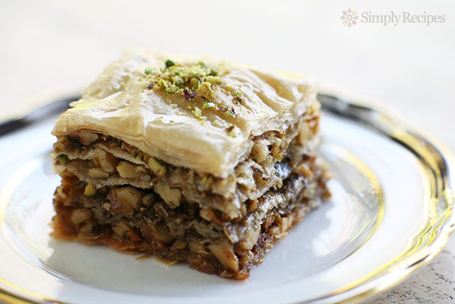

Baklava

Ingredients
Baklava
Phyllo dough
1 pound combination of chopped almonds, walnuts, and pistachios
1 cup melted butter
1/3 cup sugar
1 teaspoon ground cinnamon
1/3 teaspoon ground cloves
Syrup
1 cup water
1 cup sugar
1/2 cup honey
2 tablespoons lemon juice
1 cinnamon stick
Equipment
9x13 Pan
Steps
Baklava
- Lightly grease a 9x13 pan and set the oven to 350°F.
- Thaw the phyllo dough according to manufacturer's directions
(this may take overnight). When thawed, roll out the dough and
cut the dough in half so the sheets will fit in the pan. Cover
with a damp towel to keep it from drying out.
- Process the nuts untl in small, even sized pieces. Combine with
sugar, cinnamon, and cloves. In a separate bowl, melt the butter
in the microwave.
- Place a sheet of phyllo dough into the pan. Using a pastry brush,
brush the phyllo sheet with melted butter. Repeat 7 more times
until it is 8 sheets thick, each sheet being "painted" with the butter.
- Spoon on a thin layer of the nut mixture. Cover with two more sheets of phyllo,
brushing each one with butter. Continue to repeat the nut mixture and two buttered
sheets of phyllo until the nut mixture is all used up. The top layer should be 8 phyllo
sheets thick, each sheet being individually buttered. Do not worry if the sheets crinkle
up a bit, it will just add more texture.
- Cut into 24 equal sized squares using a sharp knife. Bake at 350°F for 30-35 minutes or
until lightly golden brown, and edges appear slightly crisp.
Syrup
- Combine the cinnamon stick, sugar, lemon juice, honey, and water in a saucepan.
Bring to a boil, then reduce to medium low heat and let simmer for 7 minutes and
slightly thickened. Remove the cinnamon stick and allow to cool.
Finishing Touches
- Spoon the cooled syrup over the hot baklava and let cool for at least 4 hours. Garnish with
some finely crusted pistachios of desired.